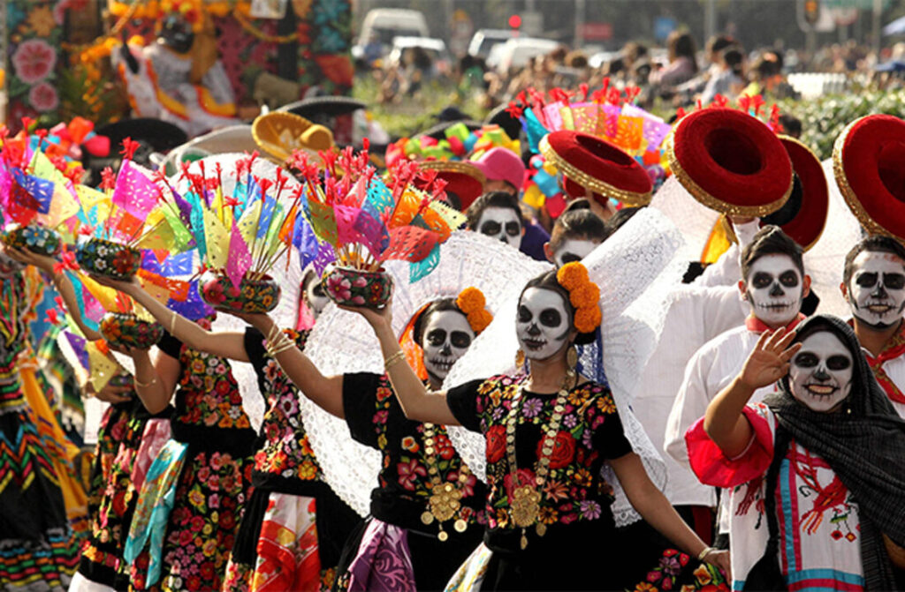

o Día de Los Muertos, o qual é muito bem retratado no filme Viva – A vida é uma festa, da Pixar. As celebrações começam no final de outubro e vão até o começo de novembro, dia 2, que, segundo a crença mexicana, nesse dia, os mortos possuem uma permissão divina para visitar parentes e amigos. Eles celebram a vida e a morte.
os mexicanos enfeitam suas casas com altares de flores, velas, fotos, sal (representando a purificação) e comida, geralmente o prato preferido de quem se foi. Já nas ruas, acontecem algumas paradas com pessoas vestidas de caveiras, sempre com fantasias e maquiagens bem marcantes. Além das caveiras mexicanas em todos os lugares do país, as caveiras doces (calaveras dulces), feitas de açúcar, água quente e limão, são muito famosas, pois segundo a tradição, quem ofertar uma caveira doce, garante o seu lugar no paraíso.
Clique aqui para ver a história do México